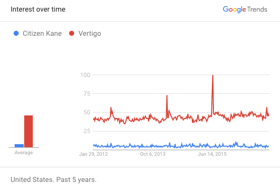

To watch the greatest movie, perhaps look to the 2011 documentary The Greatest Movie Ever Sold or the 2009 drama The Greatest movie or even the 1958 thriller Vertigo, rated first by the Sight & Sound magazine. Yet none is better than the 1941 mystery film Citizen Kane directed by Orson Welles, the prime choice for 20th century film critics. Described by cinematographer Laurie Boeder as “as the finest movie ever made... a uniquely American masterpiece,” Citizen Kane has been lauded as an American wonder, the “most interesting and technically superior films that has ever come out of a Hollywood studio” as Kate Cameron from the New York Daily News puts it. Yet to present only the critical acclaim of one film in justifying its greatness would be biased and futile; Vertigo has earned similar remarks, and was dubbed "the ultimate critics' film” by Sight & Sound’s Nick James and “culturally, historically and aesthetically significant” by the US Library of Congress. Yet there exists but one greatest film, and with critical acclaim and contemporary success accredited to both films, we remain tasked with choosing: can there be a justifiable greatest of Hollywood’s myriad magnum opi? What grounds and qualifications merit the title of “the greatest” and what is the final verdict—which film triumphs?
Figure 1: Citizen Kane
Figure 2: Vertigo
Defining "The Greatest"
Perhaps “the greatest film” equates to the most technologically innovative one, films that invent perspectives and experiment with novel mis-en-scene. Yet by that criterion, an assessment of the greatest film would be beholden to technological advancements in the film industry, as technically groundbreaking films often emerge in periods of cinematography advancement. Perhaps “the greatest film” is certified by the film’s public reception. Questions regarding the volatility of public whims and the temporal success of a film then emerge: can a film that is hated one decade but loved the next still be great? How qualified is the public—who voluntarily watches a few thematically-limited blockbusters every year— to assess the quality of films? Or perhaps “the greatest” film debate within the cinema industry equates to the disputed notion of the Great American Novel, one that accurately captures the American culture and spirit of its time. Indeed, the task of assessing Hollywood’s greatest film is a difficult one, and has remained integral to longstanding film-critic conversation that surfaces year after year. In engaging in film academia, it remains imperative to consider the following arguments in favor of Citizen Kane as contributions to the preexisting conversations, not sweeping conclusions from them.
Why Citizen Kane
Citizen Kane has earned the top spot in ratings for years now, albeit with exceptions, most notably Sight & Sound’s 2012 poll. Most often cited among Orson Welles’s tours de force are, as Filmsite puts it, (1) the “deep-focus shots with incredible depth-of field”, (2) the “flashbacks, flashforwards and non-linear storytelling”, and (3) “long, uninterrupted shots or lengthy takes of sequences.” Yet none of Filmsite’s justifications are novel or innovative; John Ford employed deep-focus before Welles in his 1940 drama The Long Voyage Home, a non-linear storytelling technique was structurally apparent in William Howard’s 1933 The Power and The Glory, and long takes were integral to George Melies’ films far before Citizen Kane. What differentiates Citizen Kane from its predecessors and its descendants, however, isn’t so much the individual innovations or novelties that Welles incorporated, but rather the seamless ways in which those innovations contributed to the film’s narrative. That is, look beyond the individual parts of the film towards the whole, and the manner in which the parts contribute to the whole. Essentially, Citizen Kane is the greatest film not for its novel techniques, but rather for its synthesis of existing techniques in novel manners.
Take, for instance, Citizen Kane’s beginning shots. From the opening image, Welles employs cinematic techniques to convey the motif of journalism that progresses through the film. Ominous music gives way to a “No Trespassing” sign, yet the camera unheedingly pans upwards over the fence.
Figure 3: The introduction of the film.
Almost impulsively, the camera—and concurrently the viewer—trespasses, setting the mysterious, probing tone for the remainder of the film. Indeed, even the camera surges to peek beyond the obvious, to explore the unknown; from the get-go, the viewer is immersed in the newspaper experience of muckraking and exposing the hidden. Welles’ masterful control of the camera is apparent, as we’re already engaged in Charles Foster Kane’s perceptive journalism before even having met him. It’s Welles’ treatment of each detail of this film to assert the film’s larger themes, indeed even the minutia of the initial “No Trespassing” sign, that deem it the greatest film. Each scene and detail was crafted not only to perfect its own mis-en-scene, but also to augment its interaction with the film as a whole. For example, as Charles Kane builds his media empire from ground up, the perspective angle grows lower so as to depict his growth in power. This regard to detail, this manipulation of viewers to craft the compelling narrative empowers every scene of Citizen Kane; from the lighting in Kane’s pacing scene to the triangular character blocking in the adoption scene, Welles employs cinematography techniques to not only enhance individual scenes, but to contribute to the thematic narrative as a whole.
Figure 4: Toward the beginning, as a child, Kane is shot from a high-to-low angle.
Figure 5: Yet, as Kane rises in prominence and age, the camera shifts downward so as to depict Kane's power.'
Figure 6: This jarringly low shot highlights Kane's empire and the juxtaposition of the christmas tree offers a measure of height comparison.'
Why Vertigo has Vertigo
Yet critics such as Dan Geddes argue that Citizen Kane “lacks a compelling story” and “carries little emotional impact.” The film’s popularity is waning, so much so that the Sight and Sound’s 2012 poll ranked Vertigo above Citizen Kane, prompting a flurry of controversy with critics polarized on either side. Claire Huxam from Hollywood News points out that Vertigo's fearless climb to the top (without vertigo, of course) in 2012 is justified for it “just gets better with every viewing...it’s just put together so seamlessly.” With regards to Huxam’s remarks and Vertigo’s recent critical success, Hollywood’s perception of great American film has changed. As Richard Rushfield from The Daily Beast argues, Citizen Kane still remains on top; the critics succumbed to the opinions the crowd while choosing Vertigo in 2012. With the advent of digital technology and social media sites such as Twitter and Facebook, film opinions of the casual movie fanatic have saturated film criticism. No longer do critics hold the wieldy stick, no longer do they decide which films receive critical acclaim. In the same manner that the restaurant rating Michelin guide is in decline to Yelp, America’s critics are beholden to the whims of the American public through sites like Facebook, Twitter and IMDB among others. The result: “No longer are the mavens of establishment journalism here to dictate to the people, but now, they serve to reflect the people’s will.” Thus Vertigo’s “greatness” is merely a product of its public popularity; as evinced by Figure 7 below, Vertigo is searched far more on Google than Citizen Kane, illustrating the public perception and the resulting Sight & Sound outcome. Yet, as established earlier, the public cannot gauge the “greatness” of the film; the narrowness of the blockbuster films fed to the public eye and the lack of knowledge of prior films deems us unable to assess the “greatness” of films. Citizen Kane thus remains on top, for it’s the true choice of the critics, though not of the masses.

Figure 7: The popularity of Citizen Kane and Vertigo.
Why Should We Care?
In truth, determining the greatest film of all time has no real value; sure, Leonardo da Vinci’s Mona Lisa—widely accepted as the greatest painting—gains the most attention, but Vincent Van Gogh’s Starry Night and da Vinci’s Last Supper remain enshrined within perpetual glory. As critic Sourya Majoumder points out, “What Citizen Kane offers to the evolution movie making is beyond comparison while Vertigo is a game changer in the way every Hitchcock movie ever made is. When the genres are flung so wide apart, I see no point in saying one is better than the other.” Furthermore, the ratings, if important at all, vary significantly from one polling agency to the next. While Rotten Tomatoes offers its top two spots to The Wizard of Oz (1939) and Citizen Kane with 2015 thriller Mad Max: Fury Road as fourth, IMDB chooses The Shawshank Redemption (1994) and The Godfather (1972). Without existing universal standards, and without any foreseeable standards in the near future, controversy regarding the greatest films will endure. So why rank the top films altogether? Why not watch them all?